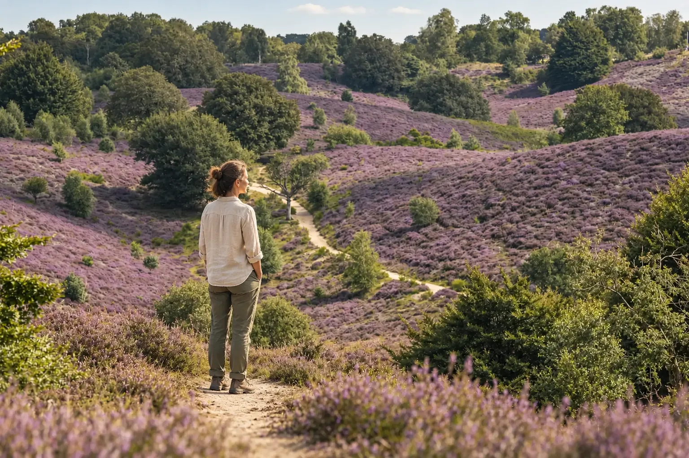

Uusi näkökulma itseen
Kokemus auttaa sinua näkemään omat uskomuksesi, reaktiosi ja toimintamallisi uudesta näkökulmasta sekä ymmärtämään paremmin niiden taustaa ja vaikutusta elämääsi. Kohtaamalla toimintatapasi, pelkosi ja puolustusmekanismisi suuremmalla ymmärryksellä, suhteesi itseesi muuttuu myötätuntoisemmaksi.
Samalla voit saada etäisyyttä toistuviin kaavoihin, oli sitten kyse elämäntavoista, päihteistä tai ihmissuhteista, ja saat tilaa uusille valinnoille, luovuudelle ja mahdollisuuksille. Kokemus auttaa sinua tunnistamaan, mikä elämässäsi on todella tärkeää ja mikä suunta tuntuu aidosti omalta.